Section B
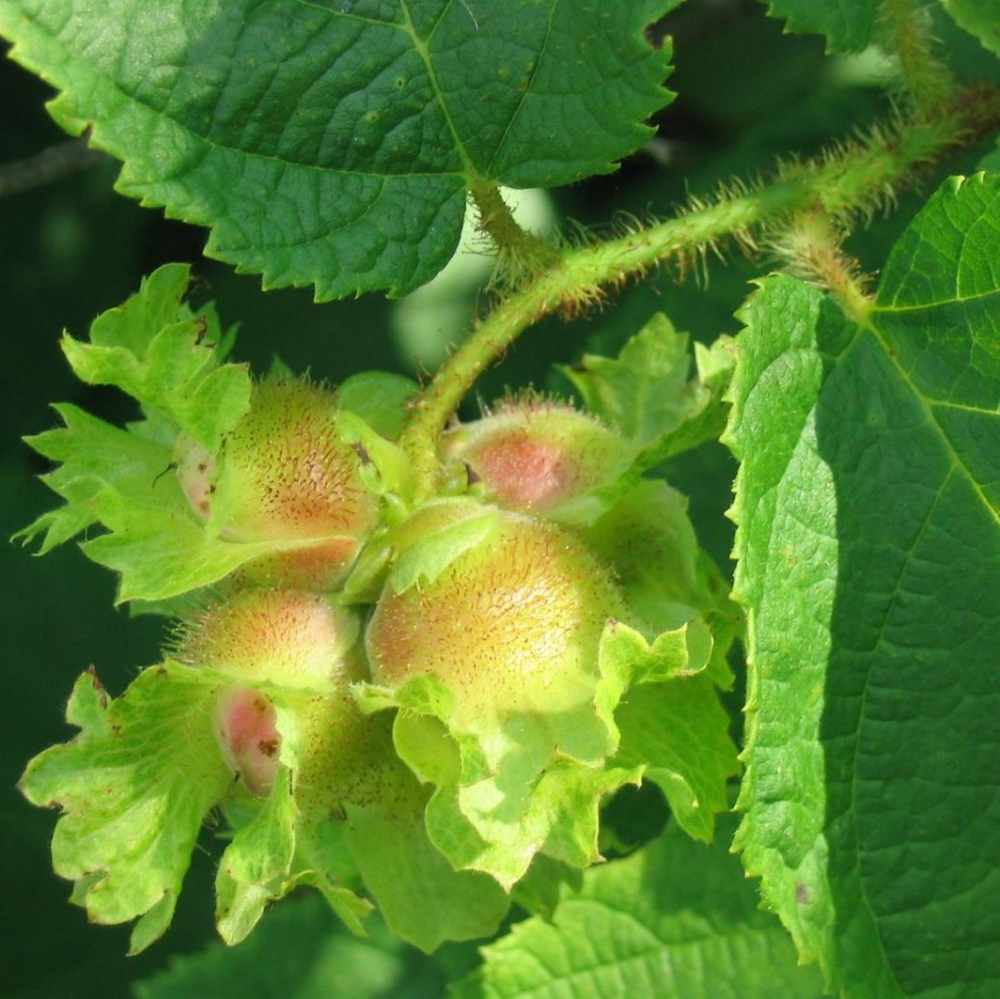
Noisetier américain
Comestibilité : Noix ✔
Période de floraison : Avril - Mai
Le noisetier américain est indigène dans l’est des États-Unis. Il est plutôt rare à l’état naturel au
Québec, mais est assez rustique pour y être planté. Il a notamment une excellente résistance aux grands
vents. Cet arbuste dense pousse rapidement et produira des drageons qu’il faudra éliminer. Les noisettes,
comestibles, sont mûres à l’automne.
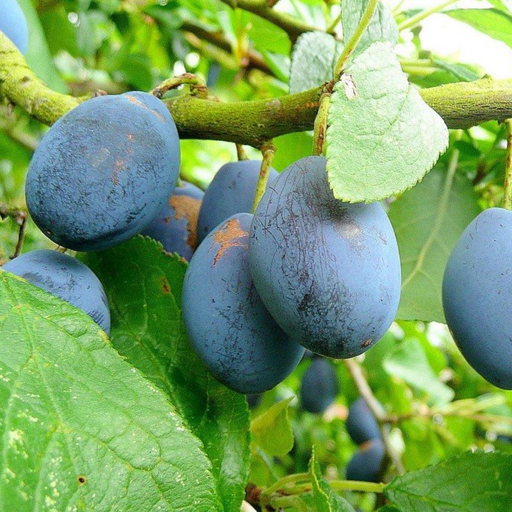
Prunier de Damas
Comestibilité : Fruit ✔
Période de floraison : Fin septembre
Cette petite prune bleue, très populaire en Europe est délicieuse à croquer ou en confiture.
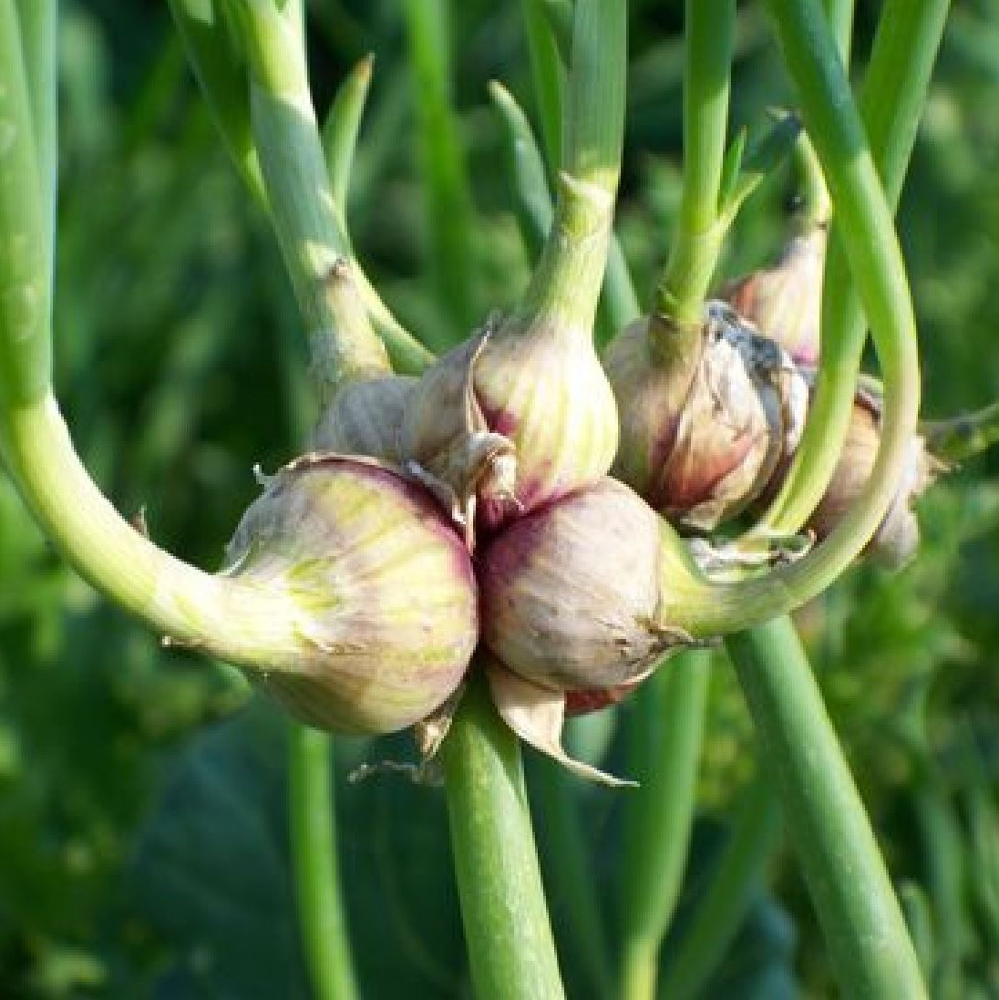
Oignons rocamboles
Comestibilité : Bulbes bulbilles, feuillage ✔
Période de floraison : Tout l’été
L’oignon rocambole ou oignon égyptien est une bien curieuse plante. Elle a toujours un effet spectaculaire
dans une plate-bande avec ses bulbilles. Ces derniers, au bout des feuilles, les rendent si lourdes qu’elles
finissent par plier. Lorsque les bulbilles touchent le sol, ils s’enracinent pour former de nouveaux plants.
D’où le nom anglais d’oignons marcheurs. On pourrait presque les qualifier d’oignons envahissants, mais ils
s’arrachent si facilement que ça nous paraît injuste ! Tout est comestible dans cette plante : les bulbes,
les feuilles et les bulbilles. Ces dernières sont plus faciles à utiliser lorsqu’elles sont jeunes car nul
besoin de les éplucher. Lorsque matures, elles deviennent comme de véritables oignons miniatures et il faut
s’armer de patience pour les préparer.
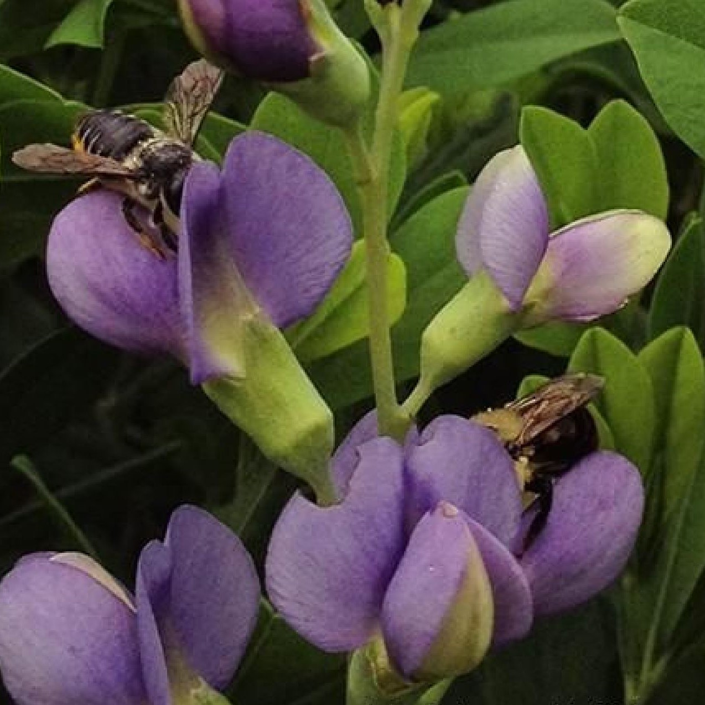
Lupin indigo
Comestibilité : Aucune ❌
Période de floraison : Mai - Juin
La consoude de Russie, c’est peut-être LA plante de la permaculture, et elle n’est même pas comestible !
On la cultive pour plusieurs autres raisons, notamment pour produire son propre paillis. Elle est parfaite
pour ce rôle, notamment parce qu’elle pousse très rapidement. On peut la tailler au ras du sol plusieurs
fois dans l’été. Elle est un couvre-sol extrêmement efficace par la densité de son feuillage. Finalement,
elle a les mêmes propriétés médicinales que la consoude officinale, très cicatrisante et pour les maux de
la peau, sans le côté terriblement envahissant.
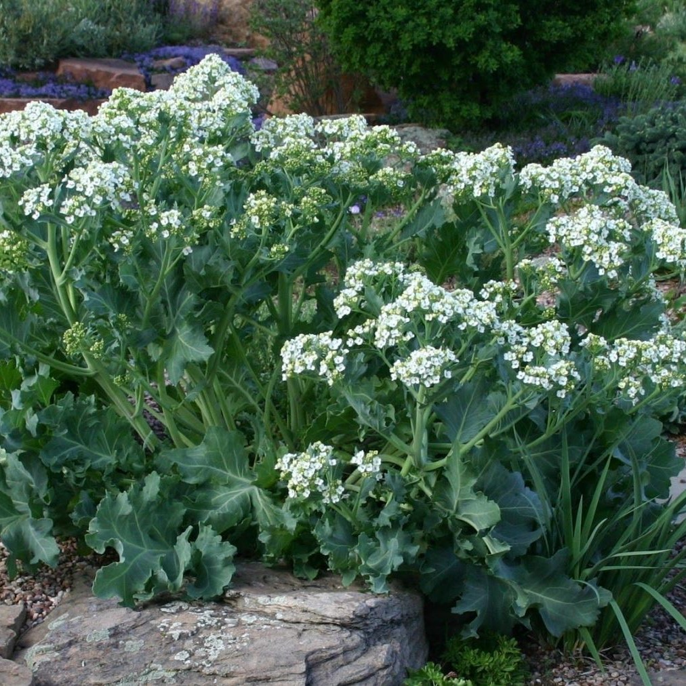
Chou crambe
Comestibilité : Pousses, feuilles, boutons floraux, fleurs, racines ✔
Période de floraison : Juin - Juillet - Août
Il y a des légumes vivaces dont le goût nous a déçu, mais il y en a qui nous ont enchanté. Et le chou
crambe est clairement dans notre top! Les pousses printanières sont comestibles, le feuillage se cuisine
comme le kale ou le collard, et surtout il produit des minis brocolis savoureux. Il faut simplement cueillir
les bouquets de boutons floraux avant que les fleurs (comestibles!) n’éclosent. Vous devriez quand même en
laisser quelques-unes fleurir pour ne pas vous priver de ce beau spectacle tout blanc et récupérer quelques
graines au passage ! Cette massive brassicacée n’est pas autant la cible de la piéride du chou que ses
pauvres cousines, raison de plus de l’adopter. Attention de ne pas le planter près de plantes plus agressives
que lui, il n’est pas fameux contre la compétition.
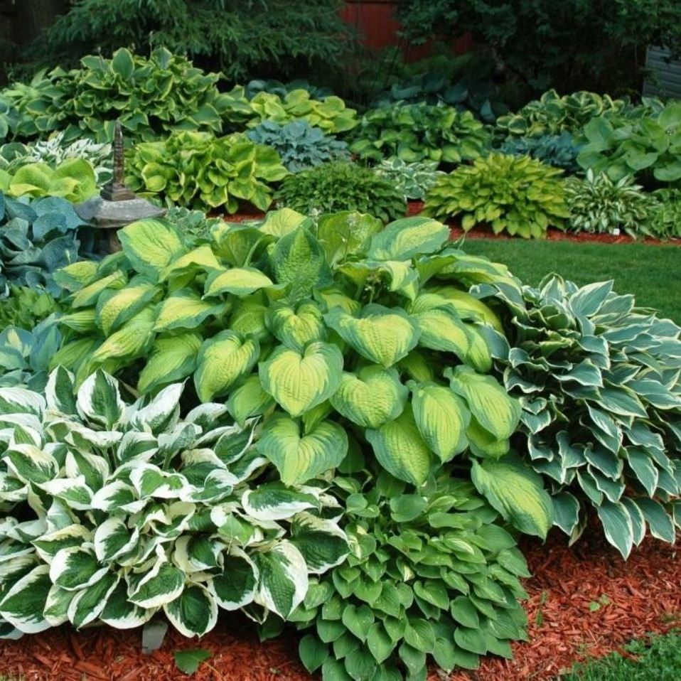
Hostas
Comestibilité : Pousse, jeune feuille, fleur ⚠
Mise en garde : La comestibilité dépend de l’espèce, faire des tests progressifs en petite quantité
Période de floraison : Août - Septembre
Vous pensiez peut-être arracher vos hostas pour les remplacer par des plantes comestibles ? Non, non !
Goûtez-y avant ! Les jeunes pousses printanières des hostas, récoltées lorsque les feuilles sont encore
enroulées, sont légèrement sucrées. C'est une chose bien connue dans certains pays d’Asie où la plante
est utilisée comme légume, alors qu'ici elle est simplement un classique du jardin d'ombre. Les fleurs,
croquantes, sont aussi comestibles. Avec plus de 1000 variétés cultivées, les hostas ne sont certainement
pas tous égaux en termes de goût et de digestibilité. Peu d’information étant disponible, nous recommandons
pour l’instant de faire des tests avec les espèces suivantes, comestibles selon Martin Crawford (ou les
cultivars qui en sont issus) : H. longipes, H. montana, H. fortunei, H. crispula, H. plantaginae,
H. undulata, H. sieboldii, H. sieboldana et H. ventricosa.
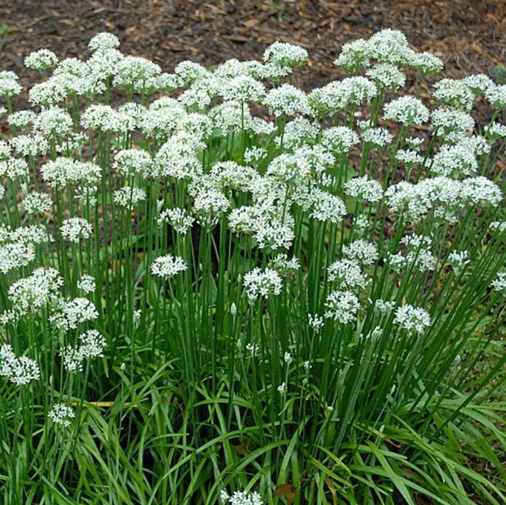
Ciboulette ail
Comestibilité : Feuille, fleur ✔
Période de floraison : Août - Septembre
Future vedette de votre potager, il faut rendre justice à cette « autre » ciboulette. Elle n'est
pas seulement la sœur de l'autre. D'abord, elle a un léger goût d'ail comme son nom l'indique. Les
feuilles (plates plutôt que tubulaires) et les fleurs (blanches et automnales, plutôt que mauves et
printanières) s'utilisent comme la ciboulette. Mais voilà, pourquoi ne pas faire comme les Asiatiques
qui la cultive depuis des siècles et utiliser la tige florale comme légume ? Oui, oui, un peu comme
la fleur d'ail, vous pouvez récolter les tiges qui porteront les fleurs et les cuisiner. En plus,
sa culture est aussi facile que celle de la ciboulette. Elle pousse un peu plus lentement, mais votre
patience sera récompensée !
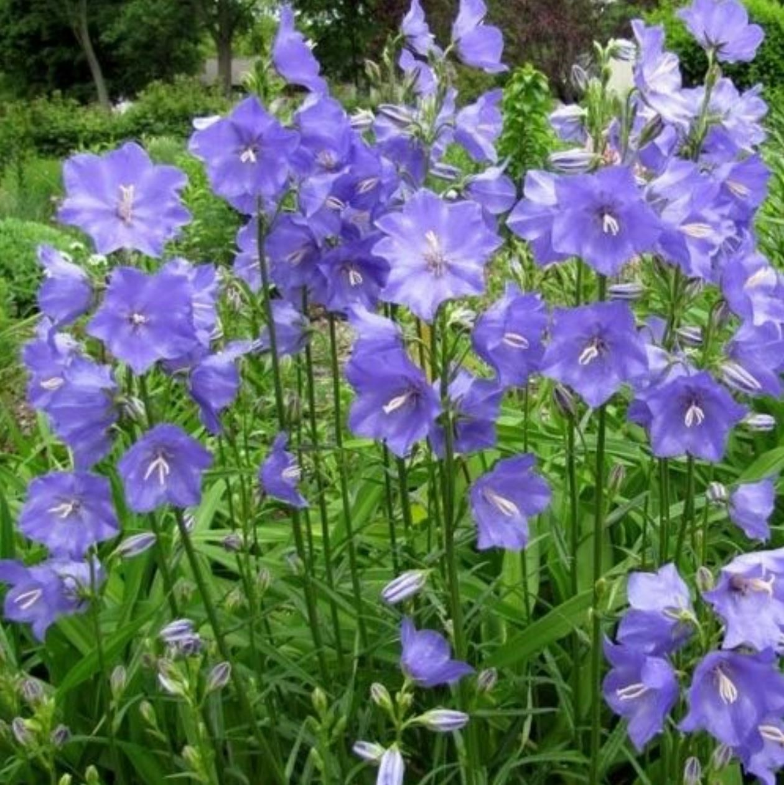
Campanule à feuille de pêcher
Comestibilité : Feuille, fleur ✔
Période de floraison : Juin - Juillet - Août
Omniprésente dans les aménagements pour ses jolies fleurs mauves, la campanule est aussi une
plante comestible méconnue. Non seulement ses fleurs donnent une apparence charmante à n’importe
quelle salade, elles sont aussi légèrement sucrées. Les feuilles sont également comestibles,
ajoutez-les donc à la salade, elles plaisent généralement à tout le monde!
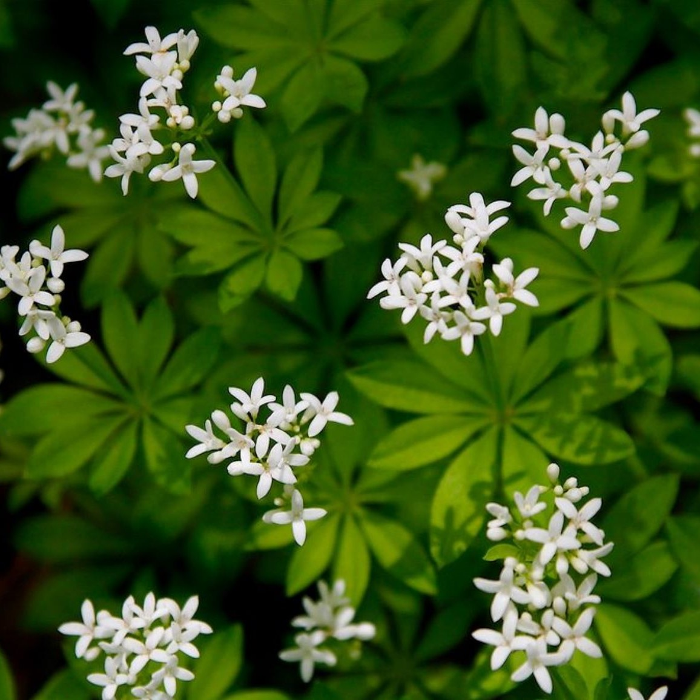
Aspérule odorante
Comestibilité : Fleur ⚠
Période de floraison : Mai - Juin - Juillet
L’aspérule odorante, lorsqu’on en froisse les feuilles, a une délicieuse odeur de foin coupé
très apparenté à celle du foin d’odeur, certains diront à celle de la vanille. C’est pour cette
raison que l’on trouve parfois des recettes de desserts aromatisés à l’aspérule odorante. Les
fleurs sont utilisées en herboristerie pour leurs propriétés calmantes, anti-stress et pour
lutter contre l’insomnie. C’est une plante qu’on utilise à petite dose car elle est très
puissante et peut causer des maux de tête, de la somnolence et des vertiges. Plantée serré,
on peut en faire un merveilleux couvre-sol d’ombre.
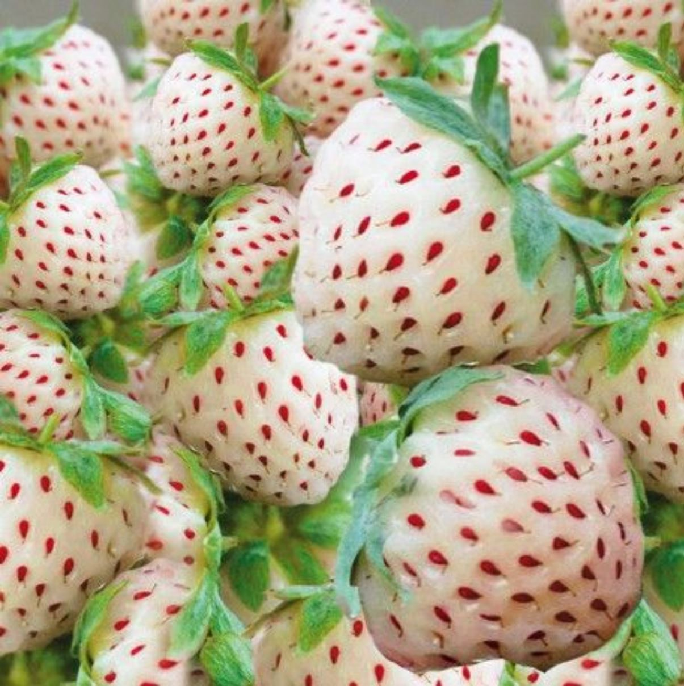
Fraisier blanc
Comestibilité : Fruit ✔
Période de floraison : Mai - Juin

Consoude de Russie Bocking 4
Comestibilité : Aucune ❌
Période de floraison : Mai - Juin
La consoude de Russie, c’est peut-être LA plante de la permaculture, et elle n’est même pas
comestible ! On la cultive pour plusieurs autres raisons, notamment pour produire son propre
paillis. Elle est parfaite pour ce rôle, notamment parce qu’elle pousse très rapidement. On
peut la tailler au ras du sol plusieurs fois dans l’été. Elle est un couvre-sol extrêmement
efficace par la densité de son feuillage. Finalement, elle a les mêmes propriétés médicinales
que la consoude officinale, très cicatrisante et pour les maux de la peau, sans le côté
terriblement envahissant.
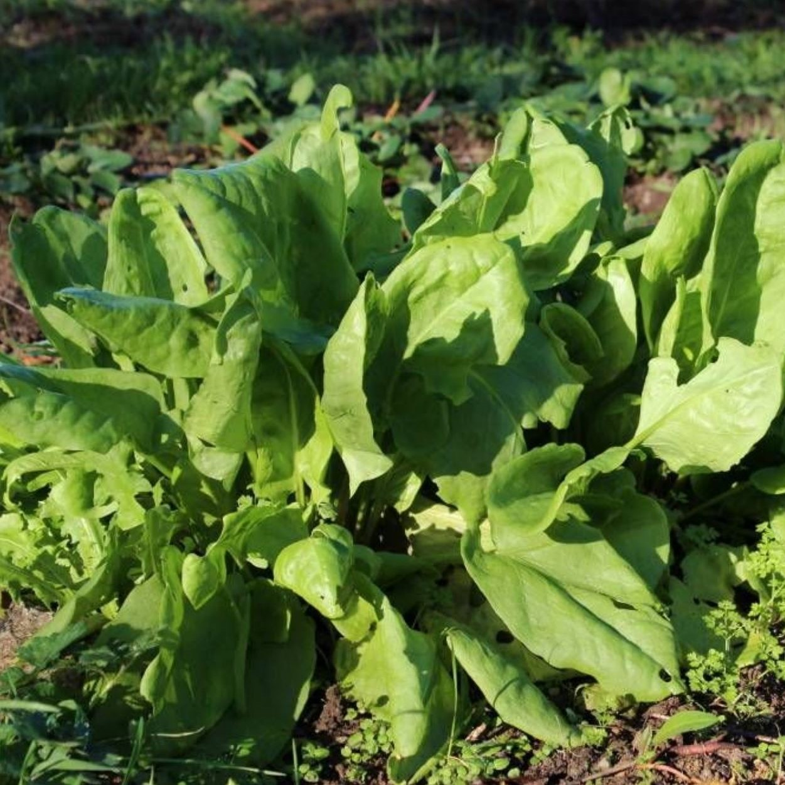
Oseille
Comestibilité : Jeune feuille ✔
Période de floraison : Juin - Juillet
Le feuillage de l’oseille a un goût citronné qui fait plutôt l’unanimité ! Elle s’intègre
merveilleusement aux salades, mais s’utilise également dans les plats mijotés et les soupes.
C’est une plante aux multiples propriétés médicinales, dont celle de lutter contre le scorbut !
Dense, elle fait un excellent couvre sol.
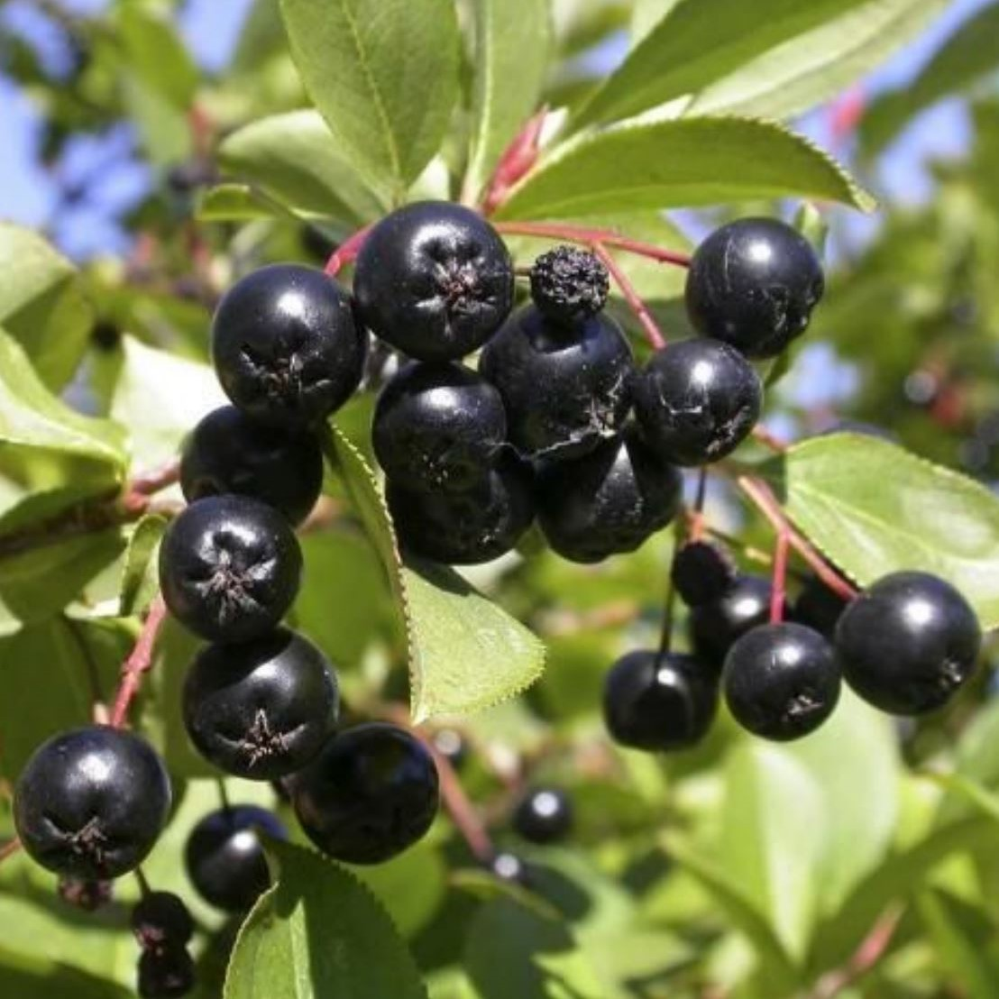
Aronie noire
Comestibilité : Fruits ✔
Période de floraison : Mai - Juin
Les fruits de cet arbuste indigène ont un goût citronné et sont très astringents lorsqu’ils
ne sont pas tout à fait mûrs. On les récolte du début à la fin-août et au début de septembre.
Très riches en antioxydants (plus que le bleuet ou la canneberge), ils s’utilisent comme
substitut au citron. On peut également les cuisiner en gelée ou, mêlés à d’autres fruits,
dans les compotes, confitures, etc.